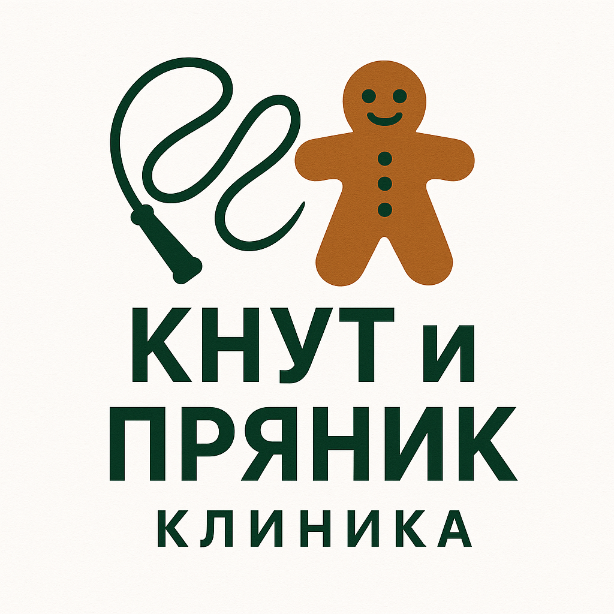

Психологическая клиника «Кнут и Пряник»
Добро пожаловать в нашу клинику!

Мы — команда профессиональных психологов, психотерапевтов и консультантов.
С 2005 года мы помогаем людям находить внутреннюю опору, справляться с жизненными трудностями и возвращаться к состоянию душевного равновесия.С чем мы работаем:
· Тревожные расстройства, панические атаки · Депрессия, апатия, эмоциональное выгорание · Проблемы в отношениях, конфликты в семье · Детско-подростковые трудности · Потеря смысла, чувство одиночества · Стресс и последствия травматических событий